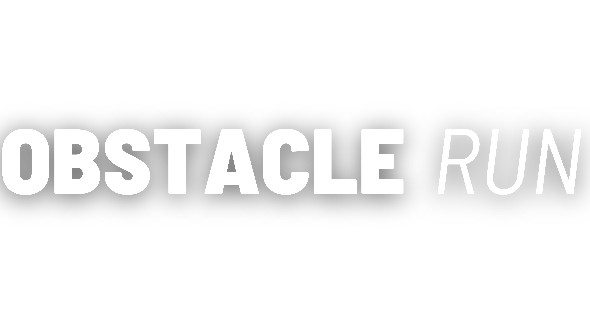
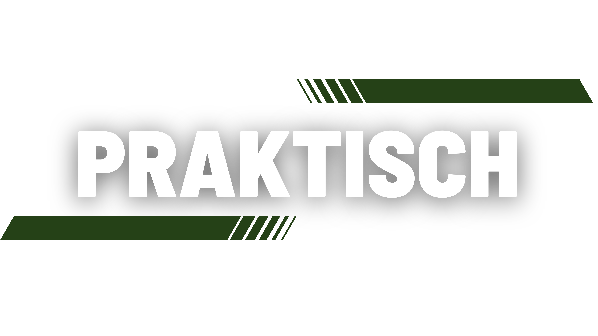
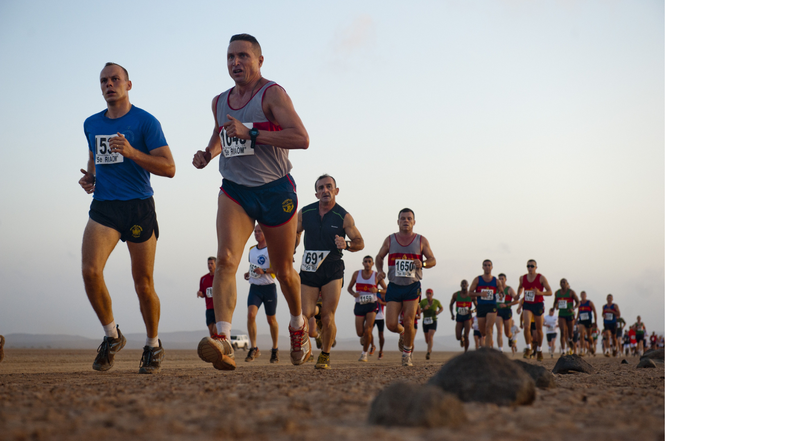

Op date placeholder organiseren Brandweer Lommel en Scouting St.-Pieter Lommel een unieke en uitdagende Obstacle Run voor jong en oud. Verwacht je aan een parcours vol hindernissen, modder, klimpartijen en waterpret – perfect voor wie houdt van actie, teamwork en grenzen verleggen!
Er zijn verschillende parcours. Lopers kunnen kiezen tussen een parcours van 5 of 8 km vol spectaculaire obstakels.
Verzamel je vrienden, collega’s of familie en beleef samen een onvergetelijke dag vol fun, sport en uitdaging. Ook toeschouwers zijn meer dan welkom om de deelnemers aan te moedigen langs het parcours of te genieten van een hapje en drankje aan onze gezellige bar.
Blijf op de hoogte van alle updates via onze social media kanalen. Klaar voor de uitdaging? See you at the start!